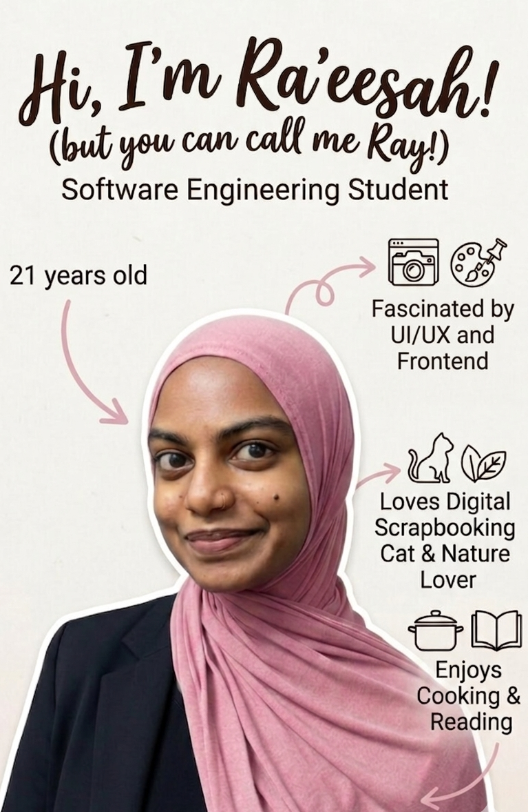

Second year SWE Student | Frontend Enthusiast
Currently a software engineering student at the University of Technology, Mauritius, fascinated by the visual aspects of software development. I'm all about creativity and bringing ideas to life through colors and design.
Projects

AI-Powered Lacunar Stroke Detection System
SafeHer App

So So Tacos Website
Events I attended
DevCon 2024 at Caudan Arts Centre
It was my first time attending a tech conference and I absolutely loved it! I used that opportunity to network with other professionals and learn about the latest trends in software development.
DevFest 2025 at University of Mauritius
Attended 2 conference sessions based on my interests, there one conferene about Modern Mobile UI/UX Principles and the second one was about Better Living via AI without forgetting a genuine networking opportunity with a Senior Software Crafter.
Resume
Bibi Ra'eesah Goolam Ossen
Email: raeesahgoolamossen@gmail.com
Download my resume here: Download
Skills: HTML, CSS, JavaScript, Java, Figma, SQL